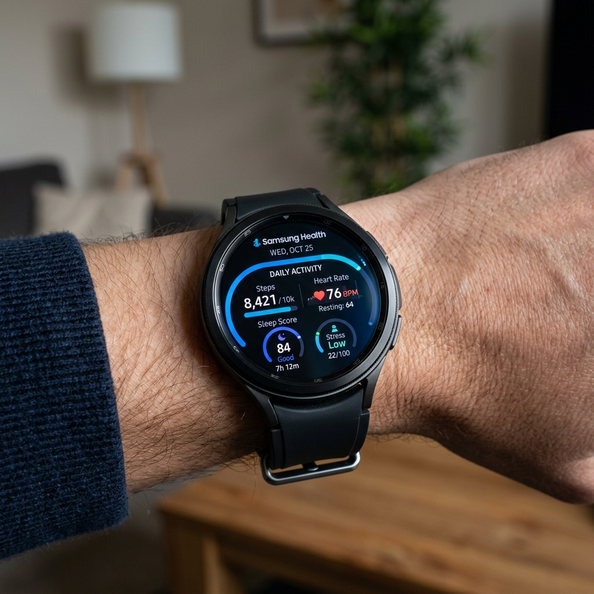

Bir Wear OS akıllı saat kurduğunuzda, fitness ve sağlık takibi genellikle öncelikler listenizin başında yer alır. Ancak doğrudan Apple Fitness ekosistemine bağlı olan Apple Watch kullanıcılarının aksine, Wear OS sahiplerinin önünde seçenekler mevcuttur. Google'ın akıllı saat ekosisteminde yer alan en popüler iki yerel sağlık platformu Samsung Health ve Google Fit'tir.
Her iki uygulama da günlük adımlarınızı izlemeyi, kalp atış hızınızı takip etmeyi, spor salonu antrenmanlarınızı kaydetmeyi ve uyku döngülerinizi analiz etmeyi vaat eder. Ancak sağlık takibine yaklaşımları farklı felsefelere dayanır. Samsung Health kapsamlı ve zengin özelliklere sahip bir sağlık merkezi sunarken, Google Fit sadeliğe ve oyunlaştırılmış hedeflere odaklanır. Bu makalede, aktif yaşam tarzınız için en iyi platformu seçmenize yardımcı olmak amacıyla Samsung Health ile Google Fit'i karşı karşıya getiriyoruz.

Kullanıcı Arayüzü ve Saat Üzerinde Kullanılabilirlik

İyi bir sağlık uygulamasının küçük bir saat ekranında gezinmesi kolay olmalıdır. Her iki platformun da bileğinizde bilgileri nasıl sunduğuna bakalım:
- Samsung Health: Yuvarlak saat ekranları (ve özellikle Samsung'un dönen çerçeveleri) için mükemmel şekilde optimize edilmiştir. Arayüz renkli simgeler, pürüzsüz kaydırma animasyonları ve son derece özelleştirilebilir Kartlar içerir. Günlük aktivite halkalarınızı görmek, su tüketiminizi kaydetmek veya stres seviyenizi ölçmek için hızlıca kaydırabilirsiniz.
- Google Fit: Sade Google Material Design estetiğiyle tasarlanmıştır. İki temel metrik etrafında şekillenir: Kardiyo Puanları (Heart Points) ve Adımlar. Saat kartları minimalisttir, hızlı yüklenir ve net, sade bir metin sunar. Samsung'un uygulamasındaki renkli görsel unsurlara sahip değildir ancak hızlı antrenmanlar sırasında son derece kolay okunur.
Egzersiz Takibi ve Doğruluk
Egzersizleri takip etmek için her iki platform da saatinizin GPS, kalp atış hızı sensörü ve ivmeölçerini kullanır. Bununla birlikte, otomatik takip yetenekleri ve bilgi derinliği değişmektedir:
Samsung Health otomatik antrenman algılamada mükemmeldir. 10 dakikadan fazla yürürseniz, koşarsanız, bisiklete binerseniz veya eliptik bisiklet kullanırsanız, saat tek bir düğmeye dokunmanıza gerek kalmadan aktiviteyi sorunsuz bir şekilde kaydeder, süreyi günlük olarak tutar ve kategorize eder. Ayrıca ciddi koşucular için asimetri analizi, yerle temas süresi ve uçuş süresi gibi son derece değerli gelişmiş koşu dinamikleri sunar.
Google Fit çok daha temel düzeydedir. Geniş bir egzersiz kategorisi yelpazesini (yogadan frizbiye kadar) destekler, ancak otomatik takibi daha az kararlıdır. Aktif antrenmanlar sırasında gösterilen metrikler basittir: Geçen süre, mesafe, kalp atış hızı ve yakılan kalori. Samsung'un sunduğu derin biyomekanik analizleri sağlamaz.
Biyometri ve Uyku Analizi
Modern akıllı saatler uykuyu ve günlük stres seviyelerini kaydetmek için 24 saat takılır. Burada, özellik farkı daha da belirginleşir:
Samsung Health devasa bir sağlık metriği kataloğu sunar. Standart nabız takibinin ötesinde, vücut kompozisyonunu (vücut yağ yüzdesini ve iskelet kası kütlesini hesaplamak için Biyoelektrik Empedans Analizi), stresi, gece boyunca cilt sıcaklığı değişikliklerini ve kandaki oksijen seviyelerini takip eder. Uyku koçluğu programı, haftalar boyunca uykunuzu analiz ederek size temsil eden bir "Uyku Hayvanı" atar ve uyku hijyenini iyileştirecek ipuçları sunar.
Google Fit ise temel kalp atış hızını, adım sayısını ve uyku süresini izler. Uyku ayrıntılarını veritabanına aktarmak için büyük ölçüde üçüncü taraf uygulamalara dayanır. Vücut kompozisyonu analizi veya cilt sıcaklığı eğilimleri gibi gelişmiş biyometrik metrikleri yerel olarak desteklemez, bu da karşılaştırıldığında biraz yetersiz kalmasına neden olur.
Uzman İpucu: Android Health Connect
Yalnızca birini seçmek zorunda değilsiniz. Android'in yerleşik Health Connect platformu güvenli, yerel bir köprü görevi görür. Samsung Health'in antrenman ve uyku verilerinizi yazmasına izin verebilir ve Google Fit'i bu verileri okuması için yetkilendirebilirsiniz. Bu, Google Fit'i ana kontrol paneliniz olarak tutarken Galaxy Watch'un gelişmiş takibinden yararlanmanızı sağlar.
Karşılaştırma Tablosu
İki platformun temel kategorilerde nasıl karşılaştırıldığını özetleyelim:
| Özellik Parametresi | Samsung Health | Google Fit |
|---|---|---|
| Günlük Hedef Konsepti | Aktivite Halkaları (Kalori, Aktif Süre, Aktivite) | Kardiyo Puanları ve Adımlar (AHA onaylı) |
| Otomatik Antrenman Algılama | Mükemmel (yürüyüş, koşu, yüzme vb. algılar) | Temel (yürüyüş/koşuyu geç kaydeder veya kaçırır) |
| Uyku Takip Derinliği | Gelişmiş (SpO2, Horlama Kaydı, Uyku Hayvanları) | Temel (yalnızca evreler ve süre grafikleri) |
| Gelişmiş Sensörler | BIA (Vücut Yağı), Sıcaklık, Stres, HRV | Yalnızca kalp atış hızı |
| Beslenme ve Su Takibi | Yerleşik kalori sayacı, su ve kafein kaydı | Yok (üçüncü taraf senkronizasyonu gerektirir) |
| Cihaz Uyumluluğu | En iyi Samsung cihazlarda çalışır; diğer markalarda sınırlıdır | Tüm Wear OS ve Android cihazlarda evrenseldir |
Ekosistem ve Senkronizasyon Uyumluluğu
Uyumluluk belirleyici bir faktör olabilir. Samsung Galaxy Watch kullanıyorsanız Samsung Health, tüm fiziksel sensörlere erişmenize izin verecek şekilde saat sistemine derinlemesine entegre edilmiştir. Galaxy Watch'ta Google Fit kullanmak, uygulamayı Play Store'dan ayrı olarak indirmeyi gerektirir ve bu uygulama BIA vücut yağı sensörüne veya EKG monitörüne erişemez.
Aksine, bir Google Pixel Watch, Fossil veya Mobvoi TicWatch kullanıyorsanız, Samsung Health önceden yüklenmiş olarak gelmez ve sınırlı işlevselliğe sahiptir. Samsung dışındaki Wear OS cihazları için Google Fit (veya yeni Pixel Saatlerdeki Fitbit entegrasyonu) mantıklı ve kutudan çıkan doğal çözümdür.
Sonuç: Hangisini Kullanmalısınız?
Samsung Galaxy Watch kullanıyorsanız ve vücut kompozisyonu, su alımı takibi, gelişmiş koşu analizleri ve kişiselleştirilmiş uyku koçluğu gibi derin, zengin özelliklere sahip analizler istiyorsanız, Samsung Health kesin kazanan durumundadır.
Herhangi bir akıllı saat markasında üretici kısıtlamaları olmadan sorunsuzca çalışan, antrenman hedeflerinizi aktif harekete odaklayan, temiz, basit ve oyunlaştırılmış bir takip deneyimi tercih ediyorsanız, Google Fit stressiz ve sağlam bir seçimdir.